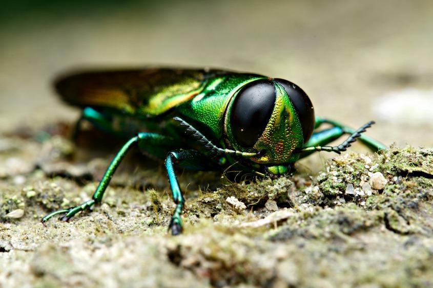

Emerald Ash Borer
These bugs are land killers the bug’s name comes from the the type of tree
they eat which is ash trees. They will protect the trees they eat and the
idea people had to get rid of the Emerald ash borer was to get rid of the
trees themselves. The size of this bug is 1.5 - 2 inches. The emerald ash
borers do not bite or sting humans emerald ash borers can not spread any
disease to organisms.